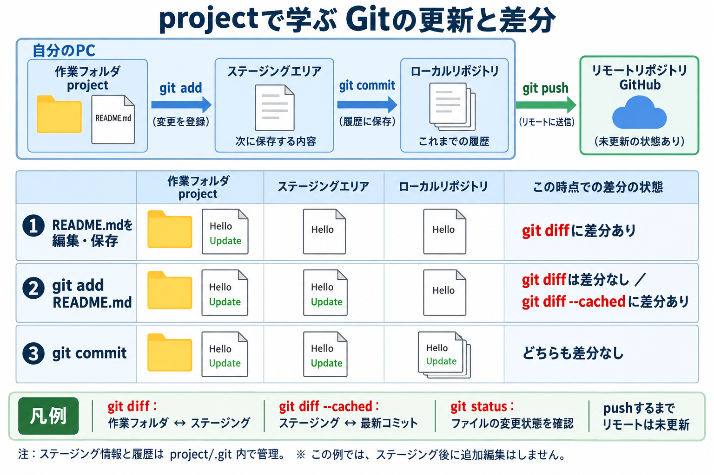
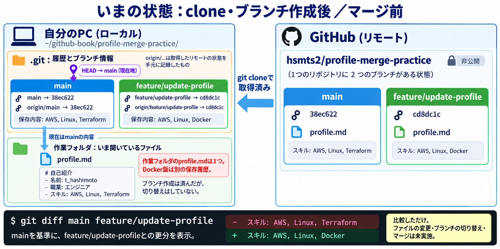
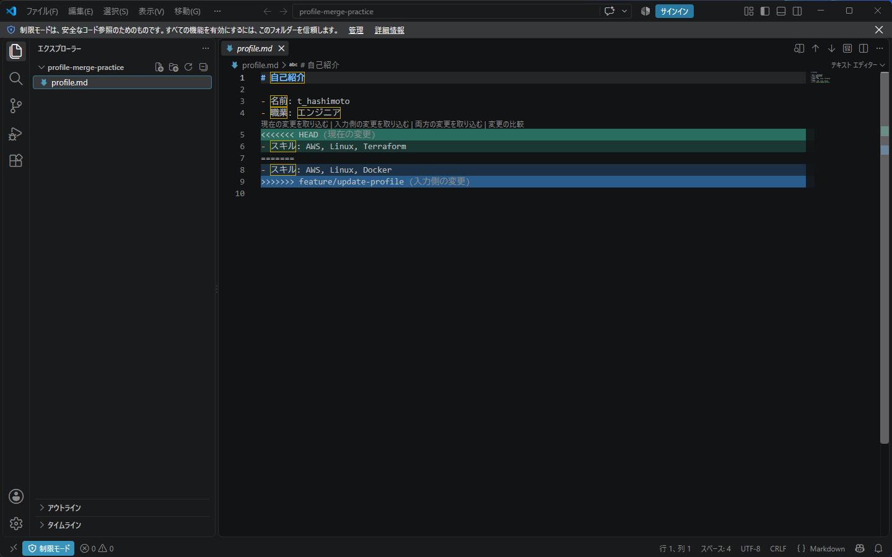
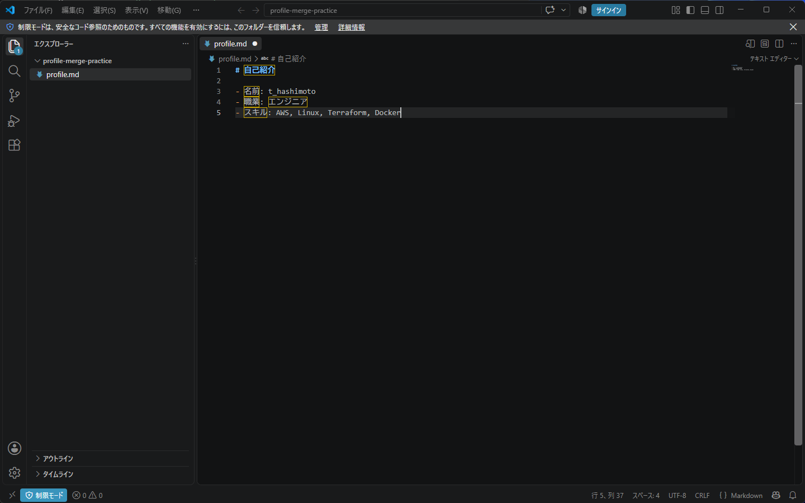

Git / GitHub
Git / GitHub 概要
初期設定
1. Gitのインストール
Gitのバージョンを確認
git --versionGit for Windowsの公式ページから、インストーラーをダウンロードし実行
PowerShellを起動し、WinGetでGitをインストール
winget install --id Git.Git -e --source wingetインストール完了後にGit BashまたはPowerShellを起動し、バージョンを再確認
git --versionGit BashとPowerShellはWindows上で動作するシェルで、基本的なGitコマンドは共通する一方、ファイル操作やパス表記に違いがあり、内容表示にはそれぞれcat、Get-Contentを使用
2. コミットに記録する名前・メールの設定
コミットに記録する名前を設定（t_hashimotoは例示値のため、必要に応じて変更）
git config --global user.name "t_hashimoto"コミットに記録するメールを設定（t_hashimoto@example.comは例示値のため、必要に応じて変更）
git config --global user.email "t_hashimoto@example.com"名前・メールはGitHubのログイン情報ではなく、コミットの記録者情報として設定し、--globalで現在のユーザーに共通適用（リポジトリ固有の設定を優先）、通常は~/.gitconfigに保存されるため再起動後の再設定は不要
3. 初期ブランチ名の設定
新規リポジトリの初期ブランチ名をmainに設定（設定済みの場合は不要）
git config --global init.defaultBranch maingit initによる新規作成時に適用（既存ブランチへの影響なし）
4. 使用するエディタの設定
VS Codeのcodeコマンドが利用可能か確認
code --versionGitで使用するエディタにVS Codeを設定
git config --global core.editor "code --wait"--waitはファイルを閉じるまで待機する指定（他のエディタは起動コマンドを変更）
5. 設定結果の確認
名前、メール、初期ブランチ名、エディタのグローバル設定を確認
git config --global user.name
git config --global user.email
git config --global init.defaultBranch
git config --global core.editor実行結果
t_hashimoto
t_hashimoto@example.com
main
code --waitcore.editorが空ならグローバル設定は未設定（別の設定や既定のエディタを使用）
読み込み元の設定ファイルと設定値を確認
git config --list --show-originリポジトリ固有の設定を含めて確認する場合は、対象リポジトリ内で実行
設定一覧にはメールアドレス、業務用パス、接続先などが含まれるため、記事への掲載前に機密情報・個人情報の有無を確認
リポジトリの初期化とステージング
Git Bashのホームフォルダから開始し、練習用のprojectを作成してREADME.mdをステージングする手順
1. 作業フォルダの作成・移動
ホームフォルダに練習用フォルダを作成
mkdir project作成したフォルダへ移動
cd project2. リポジトリの初期化
現在のフォルダをGitリポジトリとして初期化
git init履歴や設定を管理する.gitフォルダを作成（初期設定により初期ブランチ名はmain）
実行結果
ユーザー名は公開用の例示値に置き換え
Initialized empty Git repository in C:/Users/t_hashimoto/project/.git/隠しフォルダを含む一覧を表示し、.gitの作成を確認
ls -la3. README.mdの作成
Helloを記載したREADME.mdを作成（同名ファイルがある場合は上書き）
echo "Hello" > README.md4. README.mdのステージング
README.mdを次のコミットに含める対象として登録
git add README.md実行結果
warning: in the working copy of 'README.md', LF will be replaced by CRLF the next time Git touches it作業ファイルの改行コード変換に関する警告であり、今回のステージングは成功（次のgit statusで確認）
5. ステージング状態の確認
コミット対象として登録されたファイルを確認
git status実行結果
On branch main
No commits yet
Changes to be committed:
(use "git rm --cached <file>..." to unstage)
new file: README.mdOn branch main：現在の作業対象（カレントブランチ）はmainNo commits yet：最初のコミットをまだ作成しておらず、変更履歴が未記録の状態Changes to be committed：次のコミットに含める変更がステージングエリアへ登録済みの状態new file: README.md：README.mdが新規ファイルとしてステージングされ、次のコミットへの追加対象git rm --cached <file>...：この初回コミット前の状態でステージングを取り消すための案内（作業フォルダ内のファイルは保持）
ここまででREADME.mdのステージングが完了し、コミットによる履歴の保存は未実施
最初のコミット
1. コミットメッセージの入力
ステージング済みの変更を記録するため、練習用のprojectフォルダで実行
git commitcore.editorにcode --waitを設定済みの場合、VS Codeでコミットメッセージの編集画面を起動
- 開いた
COMMIT_EDITMSGの先頭に、コミットメッセージとしてinitial commitを入力 - Ctrl + Sで保存後、
COMMIT_EDITMSGの編集タブを閉じる操作 - Git BashまたはPowerShellへ戻り、コミットの完了結果を確認
--waitの指定により、保存だけでなく編集タブを閉じるまでGitは待機（VS Code全体の終了は不要）
メッセージは#を付けずに入力（既定では#で始まる行は説明用コメントとして除外）
2. コミット結果の確認
実行結果
[main (root-commit) f4db1c7] initial commit
1 file changed, 1 insertion(+)
create mode 100644 README.mdmain：コミットを作成したブランチ名root-commit：親コミットを持たない最初のコミットf4db1c7：コミットを識別するIDの短縮表示（実行ごとに異なる値）initial commit：入力したコミットメッセージ1 file changed, 1 insertion(+)：1ファイルに1行を追加した記録create mode 100644 README.md：README.mdを通常の非実行ファイルとして新規登録した記録
ここまででローカルリポジトリへの履歴保存が完了（GitHubへの送信は未実施）
3. コミット履歴の確認
作成したコミットのID、記録者、日時、メッセージを確認
git log実行結果
commit f4db1c7abf719b5631ac61451562eaba982f7efd (HEAD -> main)
Author: thsmt <t_hashimoto@example.com>
Date: Tue Sep 15 18:02:53 2026 +0900
initial commitファイルの変更・差分確認とコミット
1. README.mdの編集
projectフォルダでVS Codeを起動し、README.mdの2行目にUpdateを追加して保存
code .Hello
Update2. 変更状態の確認
git status実行結果
On branch main
Changes not staged for commit:
(use "git add <file>..." to update what will be committed)
(use "git restore <file>..." to discard changes in working directory)
modified: README.md
no changes added to commit (use "git add" and/or "git commit -a")On branch mainは現在のブランチがmain、Changes not staged for commitは変更がステージング未登録、modified: README.mdは追跡中のREADME.mdに変更がある状態
git addは変更の登録、git restoreは作業ファイルの変更を破棄するための案内（今回は実行不要）
git status -s実行結果
M README.md短縮表示の1列目はステージングエリア、2列目は作業ファイルの変更状態を表示（今回は2列目の赤いM＝未ステージングの変更）
3. 変更内容の確認
git diff実行結果
warning: in the working copy of 'README.md', LF will be replaced by CRLF the next time Git touches it
diff --git a/README.md b/README.md
index e965047..3b7fbc6 100644
--- a/README.md
+++ b/README.md
@@ -1 +1,2 @@
Hello
+Update
\ No newline at end of filegit diffは作業ファイルとステージングエリアの差分を表示（+Updateは追加行、先頭が空白のHelloは変更のない行）
@@ -1 +1,2 @@は変更前の1行から変更後の2行への差分範囲、No newline at end of fileはファイル末尾の改行がない状態
4. 変更のステージングと差分確認
git add README.md実行結果
warning: in the working copy of 'README.md', LF will be replaced by CRLF the next time Git touches itREADME.mdの変更内容をステージングエリアに登録（警告は改行コード変換の案内）
git diff実行結果
出力なし（作業ファイルとステージングエリアの内容が一致）
git diff --cached実行結果
diff --git a/README.md b/README.md
index e965047..3b7fbc6 100644
--- a/README.md
+++ b/README.md
@@ -1 +1,2 @@
Hello
+Update
\ No newline at end of filegit diff --cachedはステージングエリアと直前のコミットとの差分を表示（次のコミットに含まれる変更の確認）
git status実行結果
On branch main
Changes to be committed:
(use "git restore --staged <file>..." to unstage)
modified: README.mdChanges to be committedは変更が登録済み、緑のmodified: README.mdは次のコミットに含まれる更新対象（git restore --stagedは作業ファイルを残して登録を取り消すための案内）
git status -s実行結果
M README.md1列目の緑のMはステージング済みの変更、2列目の空白は登録後の追加変更がない状態

作業フォルダはproject、実際に編集するファイルはその中のREADME.md。今回の構成では、Gitの管理情報とローカルの履歴をproject/.gitに保存
ステージングエリアは別の作業フォルダではなく、次のコミットに含める内容を管理する仕組み。登録情報は主に.git/index、登録したファイルの内容は.git/objectsで管理（git add後もREADME.mdは元の場所に保持）
5. 変更のコミット
-mでメッセージを直接指定し、エディタを開かずにコミット
git commit -m "Updates README.md"実行結果
[main 286a68e] Updates README.md
1 file changed, 1 insertion(+)6. 履歴と作業状態の確認
git log実行結果
commit 286a68ee9affdb8bda9d3c91d6cba8aed6a0aaaa (HEAD -> main)
Author: thsmt <t_hashimoto@example.com>
Date: Tue Sep 15 18:21:05 2026 +0900
Updates README.md
commit f4db1c7abf719b5631ac61451562eaba982f7efd
Author: thsmt <t_hashimoto@example.com>
Date: Tue Sep 15 18:02:53 2026 +0900
initial commit新しいコミットから順に表示し、HEAD -> mainは現在のブランチmainが最新コミットを指す状態（メールアドレスのみ公開用の例示値へ置換）
git log --oneline実行結果
286a68e (HEAD -> main) Updates README.md
f4db1c7 initial commitコミットIDの短縮形とメッセージを1コミット1行で表示
git status実行結果
On branch main
nothing to commit, working tree cleannothing to commit, working tree cleanはコミット対象の変更がなく、作業ツリーがクリーンな状態（GitHubへの送信完了を示すものではない）
よく使うコマンドとファイル
1. git init：リポジトリの初期化
指定したフォルダにGitの管理情報を作成し、バージョン管理を開始するためのコマンド
方法A：既存のフォルダを初期化
Git管理したいprojectフォルダへ移動し、初期化
cd project
git initproject/.gitを作成し、既存のファイルはそのまま保持。ファイルのステージングとコミットは別途必要
方法B：フォルダの作成と初期化を同時に実行
projectを作成したい親フォルダで実行
git init project
cd projectprojectが存在しない場合はフォルダごと作成し、その中に.gitを作成。git init projectだけでは作業フォルダの移動は行われないため、続けてcd projectを実行
2つの方法は選択肢であり、両方の実行は不要。今回の練習用projectは初期化済みのため、再実行も不要
作成されるフォルダの構成
project/
├─ README.md ← 編集するファイル（存在する場合）
└─ .git/ ← Gitの管理情報と履歴通常はプロジェクトの最上位で初期化し、配下の各フォルダでのgit initは不要
2. git add：変更内容のステージング
作業ファイルの現在の内容を、次のコミットに含める内容として登録
git add README.md主な用途は次の3つ
- 新規ファイル：未追跡のファイルをステージングし、Gitの追跡対象へ追加
- 追跡中のファイル：編集した内容をステージングへ反映
- コンフリクトの解消後：修正した内容を登録し、解消済みとして扱うための操作
いずれも基本は「次のコミットに保存する内容の準備」
git addが登録するのは、実行した時点の内容。その後にREADME.mdを編集した場合、追加の編集内容も含めるには再度git addが必要
3. git commit：変更履歴の保存
ステージングエリアに準備した内容を、コミットとしてローカルリポジトリの履歴へ記録
エディタでメッセージを入力
git commit今回の設定ではVS Codeが起動。コミットメッセージを入力し、保存後にCOMMIT_EDITMSGのタブを閉じてコミット完了
コマンドでメッセージを指定
git commit -m "Updates README.md"-mはコミットメッセージの指定。エディタを開かずに履歴を記録
補足：追跡中の変更を自動でステージング
git commit -am "Updates README.md"-aは追跡中のファイルの変更・削除を自動でステージングする指定、-mはメッセージの指定
未追跡の新規ファイルは-aの対象外のため、事前にgit addが必要。学習中は登録対象を把握しやすいよう、git addとgit commitを分けて実行
4. git config：設定の確認・変更
Gitの動作やユーザー情報、コマンドの別名などを設定するためのコマンド
よく使うコマンドに別名を設定
git log --graph --onelineを、git gとして登録
git config --global alias.g "log --graph --oneline"登録した別名で実行（--graphは履歴のつながりを図示、--onelineは各コミットを1行で表示）
git g状態確認のコマンドを短縮
git status -sを、git stとして登録
git config --global alias.st "status -s"登録した別名で実行（表示対象の変更や未追跡ファイルがなければ出力なし）
git st登録した設定を確認
git config --global alias.g
git config --global alias.st--globalは現在のユーザーに共通する設定。別のリポジトリでも利用可能で、ターミナルの再起動後も再設定不要
入力を誤った設定の削除
今回誤って登録したarias.gを削除
git config --global --unset arias.g正しい設定名はalias.g。arias.gは設定として保存されても、コマンドの別名としては認識されない状態
5. .gitignore：Gitの管理対象から除外
未追跡ファイルのうち、Gitで管理しないファイルやフォルダのパターンを指定するファイル。今回はproject内のtest.datを除外
.gitignoreの作成
test.datを除外対象として記載した.gitignoreを作成（既存の.gitignoreがある場合は上書きせず追記）
echo "test.dat" > .gitignore.gitignoreは自動作成されないため、作成前のgit add .gitignoreは対象ファイルが見つからずエラー
除外状態の確認
git status -s.gitignoreのみが未追跡ファイルとして表示され、test.datは一覧から除外。ファイル自体は作業フォルダに保持
除外ルールの保存
.gitignore自体はGitの管理対象として登録し、除外ルールをコミット
git add .gitignore
git status
git commit -m "adds .gitignore"git statusでnew file: .gitignoreを確認後、コミットを実行
保存後の確認
git status -sほかに変更がなければ出力なし。隠しファイルの.gitignoreを含む一覧の確認には、Git Bashでls -laを使用
既にGitで追跡中のファイルは、.gitignoreに記載するだけでは除外されない点に注意
誤って登録したファイルを管理対象から除外する手順
一括登録はgit add -A（大文字のA）。誤って登録した場合は、次のいずれかの方法でファイルを残したまま管理対象から除外
新規ファイルをaddしただけの場合：既存のコミットがあるリポジトリでは、次の操作でステージングを取り消し
git restore --staged test.datリポジトリに最初のコミットがまだない場合は、上記の代わりに次を実行
git rm --cached test.dat取り消し後、既存の.gitignoreを編集してtest.datを追記し、除外ルールを保存。以後、通常のgit add -Aでは登録対象外
既にコミット済みの場合：.gitignoreにtest.datを追記して保存後、次を実行
git rm --cached test.dat
git add .gitignore
git status
git commit -m "Stop tracking test.dat"--cachedは作業ファイルを残してGitの管理対象から外す指定。git statusのdeleted: test.datは次のコミットから除外する予定であり、PC上のファイル削除ではない状態
上記は今回の対象ファイルだけを変更する手順。コミット前にgit statusで、ほかのステージング済み変更が含まれていないか確認
過去のコミットにはファイルが残る点に注意。秘密情報を登録した場合は、認証情報の失効・再発行や履歴からの削除など、別途対応が必要
ブランチとコンフリクト解消の演習
自己紹介ファイルの同じ行を、mainではTerraform、作業ブランチではDockerへ更新した履歴を統合する演習。実行ログを基に、入力ミスと不要な空行を除いて記載
対象は非公開の演習用リポジトリhsmts2/profile-merge-practice。cloneにはアクセス権とGitHub認証が必要（一般公開のサンプルではないため、第三者が実施する場合は同じ分岐状態の自分用リポジトリを準備）
1. 演習用リポジトリのclone
開始場所はGit Bashの~/github-book。既存のprojectやfirstではなく、別フォルダへ履歴ごと複製
git clone https://github.com/hsmts2/profile-merge-practice.git実行結果
Cloning into 'profile-merge-practice'...
remote: Enumerating objects: 9, done.
remote: Counting objects: 100% (9/9), done.
remote: Compressing objects: 100% (3/3), done.
remote: Total 9 (delta 3), reused 9 (delta 3), pack-reused 0 (from 0)
Receiving objects: 100% (9/9), done.
Resolving deltas: 100% (3/3), done.Receiving objectsはデータの受信、Resolving deltasは差分からの復元処理。両方が完了し、profile-merge-practiceフォルダを作成
cd profile-merge-practice/実行結果
フォルダ移動に成功した場合は出力なし
以後の作業場所は~/github-book/profile-merge-practice。cloneには.gitと履歴も含まれるため、git initは不要
2. 作業ファイルとブランチの確認
ls -la実行結果
total 5
drwxr-xr-x 1 hsmts 197609 0 Sep 16 04:39 ./
drwxr-xr-x 1 hsmts 197609 0 Sep 16 04:39 ../
drwxr-xr-x 1 hsmts 197609 0 Sep 16 04:39 .git/
-rw-r--r-- 1 hsmts 197609 104 Sep 16 04:39 profile.md.git/はGitの管理情報、profile.mdは作業ファイル。日時・サイズ・所有者は実行環境によって異なる値
cat profile.md実行結果
# 自己紹介
- 名前: t_hashimoto
- 職業: エンジニア
- スキル: AWS, Linux, Terraform現在はmainの内容を展開しているため、スキルはAWS, Linux, Terraform
git branch -vva実行結果
* main 38ec622 [origin/main] Add Terraform skill
remotes/origin/HEAD -> origin/main
remotes/origin/feature/update-profile cd8dc1c Add Docker skill
remotes/origin/main 38ec622 Add Terraform skill-vvaは-vv -aをまとめた表示オプション。* mainは現在のローカルブランチ、[origin/main]はその追跡先。38ec622はコミットID、Add Terraform skillはコミットメッセージ
remotes/origin/feature/update-profileは取得したリモート側の状態。履歴は手元に取得済みでも、作業用のローカルブランチはまだ未作成。origin/HEAD -> origin/mainはリモートの既定ブランチを示す目印で、現在地のHEADとは別
3. ローカルブランチの作成
git branch feature/update-profile origin/feature/update-profile実行結果
branch 'feature/update-profile' set up to track 'origin/feature/update-profile'.構文はgit branch 新しいブランチ名 作成元。Docker版のcd8dc1cを指すローカルブランチを作り、origin側との追跡関係を設定（切り替えは未実施）
git branch実行結果
feature/update-profile
* maingit branch -vva実行結果
feature/update-profile cd8dc1c [origin/feature/update-profile] Add Docker skill
* main 38ec622 [origin/main] Add Terraform skill
remotes/origin/HEAD -> origin/main
remotes/origin/feature/update-profile cd8dc1c Add Docker skill
remotes/origin/main 38ec622 Add Terraform skillローカルにも2つのブランチが存在。*はmainのままで、手元のprofile.mdもTerraform版のまま
4. ブランチ間の差分確認
git diff main feature/update-profile実行結果
diff --git a/profile.md b/profile.md
index eaa12ca..a4c7d2e 100644
--- a/profile.md
+++ b/profile.md
@@ -2,4 +2,4 @@
- 名前: t_hashimoto
- 職業: エンジニア
-- スキル: AWS, Linux, Terraform
+- スキル: AWS, Linux, Docker比較元はmain、比較先はfeature/update-profile。赤い削除行はTerraform版、緑の追加行はDocker版を表す差分。ファイルを書き換える操作ではなく、ブランチの切り替えも未実施
行頭の-- スキルは「差分の削除記号」と「Markdownの箇条書き記号」の組み合わせ。+- スキルも追加記号と箇条書き記号の組み合わせ

5. マージとコンフリクトの確認
取り込み先は現在のmain、取り込む対象はfeature/update-profile
git merge feature/update-profile実行結果
Auto-merging profile.md
CONFLICT (content): Merge conflict in profile.md
Automatic merge failed; fix conflicts and then commit the result.git status実行結果
On branch main
Your branch is up to date with 'origin/main'.
You have unmerged paths.
(fix conflicts and run "git commit")
(use "git merge --abort" to abort the merge)
Unmerged paths:
(use "git add <file>..." to mark resolution)
both modified: profile.md
no changes added to commit (use "git add" and/or "git commit -a")both modified: profile.mdは双方が変更した同じ箇所を自動統合できない状態。main|MERGINGはマージ途中で、新しいマージコミットはまだ未作成
Your branch is up to date with 'origin/main'.はmainのコミット位置と取得済みorigin/mainが一致する意味。作業ファイルに衝突がないという意味ではない
cat profile.md実行結果
# 自己紹介
- 名前: t_hashimoto
- 職業: エンジニア
<<<<<<< HEAD
- スキル: AWS, Linux, Terraform
=======
- スキル: AWS, Linux, Docker
>>>>>>> feature/update-profile<<<<<<< HEADから=======まではmain側のTerraform、区切りから>>>>>>> feature/update-profileまでは取り込み側のDocker。これらは解消時に削除する衝突マーカー
6. マージの中止と復元確認
git merge --abort実行結果
今回の中止は出力なしで完了
cat profile.md実行結果
# 自己紹介
- 名前: t_hashimoto
- 職業: エンジニア
- スキル: AWS, Linux, Terraform今回のように変更のない状態から開始したマージを中止し、Terraform版へ復元。プロンプトはmainに戻り、作業ブランチのDocker版の履歴は保持
7. 再マージとVS Codeでの衝突解消
git merge feature/update-profile実行結果
Auto-merging profile.md
CONFLICT (content): Merge conflict in profile.md
Automatic merge failed; fix conflicts and then commit the result.code .実行結果
VS Codeで現在のフォルダを表示

今回は両方のスキルを残すため、衝突部分を次の1行へ統合。名前・職業を保持し、すべての衝突マーカーと重複行を削除
# 自己紹介
- 名前: t_hashimoto
- 職業: エンジニア
- スキル: AWS, Linux, Terraform, Docker
Ctrl＋Sで保存。VS Codeの「両方の変更を取り込む」は2行を残す場合があるため、今回の完成形は上記の1行へ手動で整理
git diff --check実行結果
出力なし：今回の差分では衝突マーカーや空白エラーの指摘なし
このチェックは文章の正しさまで保証するものではないため、TerraformとDockerがともに残っていることも目視確認
8. 解消内容の登録とコミット
git add profile.md実行結果
出力なし：修正内容をステージングし、解消済みとして登録
git add後もマージは途中。保存しただけでは完了せず、次のコミットで履歴への統合を確定
git commit -m "Merge profile skill updates"実行結果
[main e3e23c7] Merge profile skill updatese3e23c7が今回作成したマージコミット。プロンプトからMERGINGが消え、main上での統合が完了（コミットIDは実行内容などにより変化）
9. マージ完了と履歴の確認
git status実行結果
On branch main
Your branch is ahead of 'origin/main' by 2 commits.
(use "git push" to publish your local commits)
nothing to commit, working tree cleannothing to commit, working tree cleanは未コミットの変更がない状態。ahead of 'origin/main' by 2 commitsの2件は、取り込んだDocker側コミットと新しいマージコミット
git log --all --graph --oneline実行結果
* e3e23c7 (HEAD -> main) Merge profile skill updates
|\
| * cd8dc1c (origin/feature/update-profile, feature/update-profile) Add Docker skill
* | 38ec622 (origin/main, origin/HEAD) Add Terraform skill
|/
* 6810bea Initial profile--allは各参照からたどれる履歴、--graphは履歴のつながり、--onelineは1コミット1行での表示
mainはe3e23c7へ進み、2本の線が合流。feature/update-profileはcd8dc1cのまま、origin/mainは38ec622のまま。今回はpush未実施のため、リモート側は未更新
ここまででローカルの衝突解消とマージが完了。演習中の確認コマンドや出力は、各「実行結果」を展開して確認